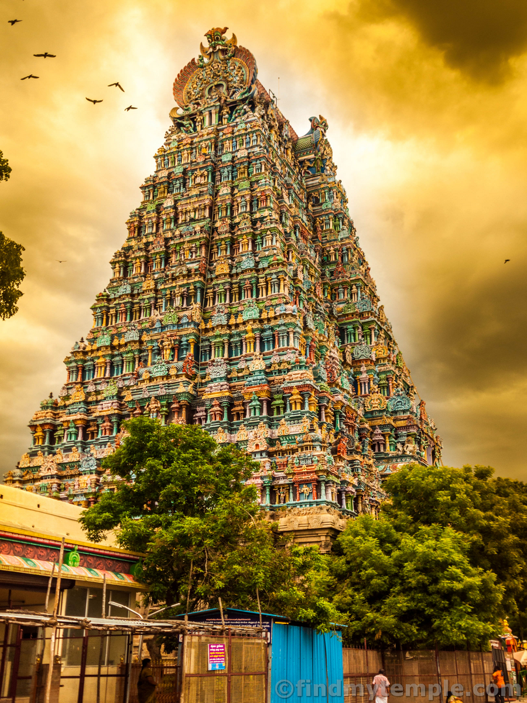
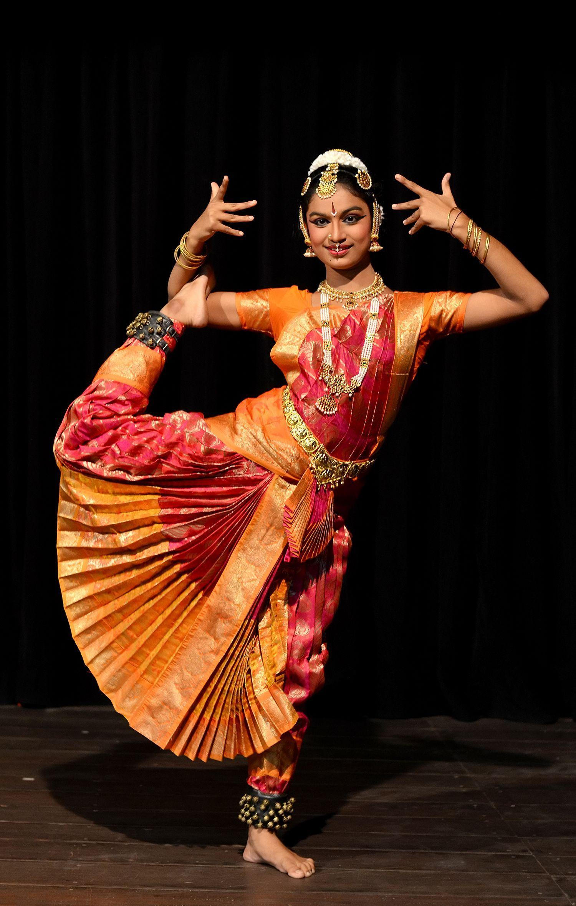
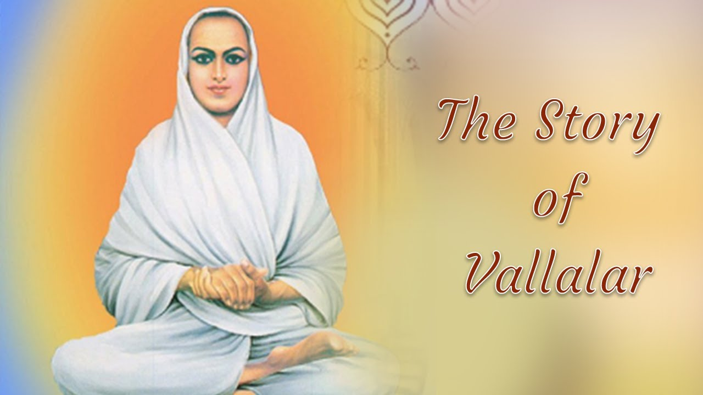
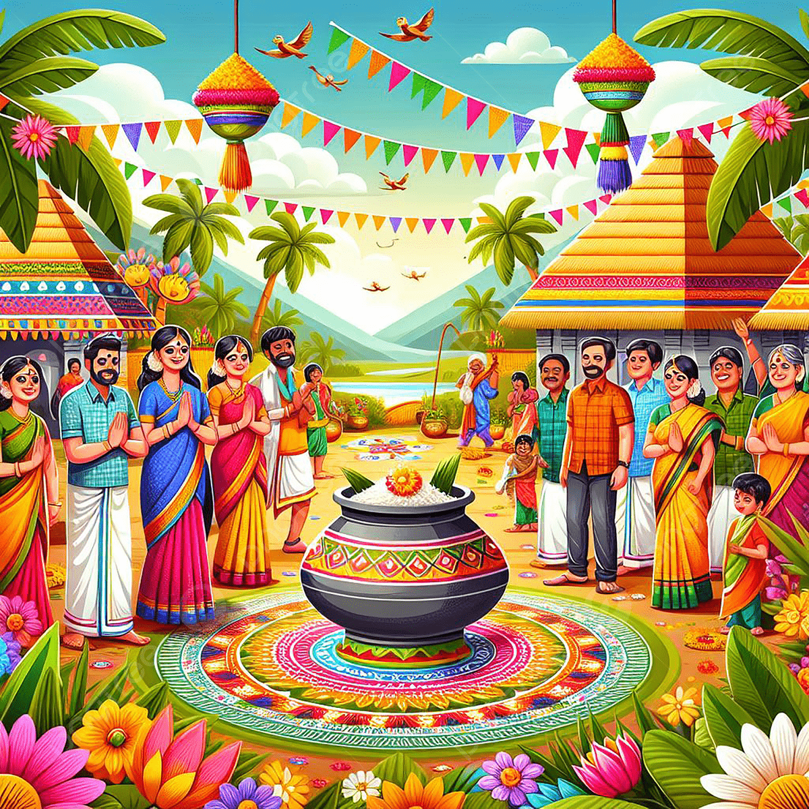
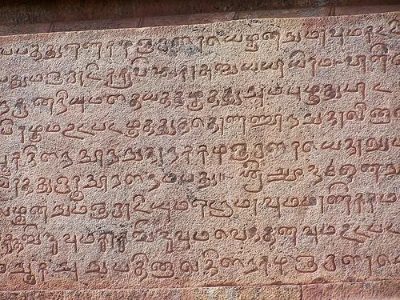

Tamil Nadu is renowned for its towering gopurams and beautifully carved temple complexes. These temples were built by powerful dynasties like the Cholas, Pandyas, and Pallavas. They are not only religious spaces but also centers of music, dance, festivals, and community gatherings.

Bharatanatyam is one of India’s oldest classical dance forms that originated in Tamil Nadu. It combines rhythmic footwork, expressive facial expressions, and symbolic hand gestures. The dance traditionally narrates stories from Hindu mythology and spiritual texts.

Tamil Nadu has vibrant folk arts such as Karagattam, Kavadi Attam, and Therukoothu. These performances are often staged during temple festivals and village celebrations. They depict stories from epics and local folklore through music, drama, and colorful costumes.

Pongal is a major harvest festival celebrated to thank the Sun God and nature. Families prepare a special sweet rice dish called Pongal and decorate homes with Kolam designs. The festival highlights Tamil Nadu’s deep agricultural roots and spirit of gratitude.

Sangam literature is among the oldest surviving literary traditions in the world. Written over 2000 years ago, it describes ancient Tamil society, love, war, and ethics. It continues to be a proud symbol of Tamil cultural identity and intellectual heritage.